배드민턴 클럽용 리그
경기 결과만 넣으면 티어·랭킹이 알아서 도는 동호회 리그예요.
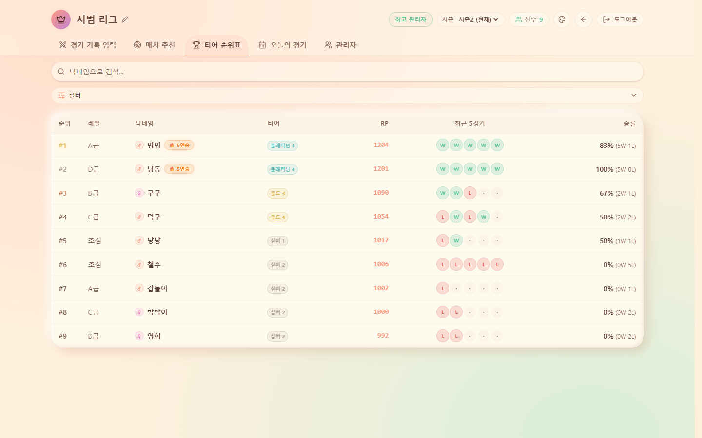
배드민턴 동호회 총무 한 번 맡아보신 분은 다 아실 거예요. 정모 하나 굴리는 게 은근 큰일입니다. 경기 결과 받아 적고, 집에 와서 엑셀 켜고 순위 다시 계산하고, 다음 주 대진 짜고… 정작 본인은 라켓 몇 번 못 잡고 총무 노릇만 하다 끝나기도 하죠.
그래서 또 만들었습니다. 누가 말려요 😅 이번엔 동호회용 배드민턴 리그예요. 우리 클럽 정모를, 티어 게임처럼 알아서 돌아가게 만드는 도구입니다. (아래 화면은 전부 가짜 닉네임으로 꾸민 데모 리그예요.)
결과만 넣으면 티어가 알아서
순위표에 급(A급·조심 등)·닉네임·티어·RP·최근 5경기 승패·승률이 착 정리돼요. 경기 결과가 쌓이면 티어와 랭킹이 알아서 갱신됩니다. 총무가 엑셀 붙잡고 하던 손계산이 0이 되는 거죠. 회원들은 "어, 나 티어 올랐네?" 하는 재미에 다음 정모를 스스로 기다리고요.
복식 점수는 스코어보드에서 톡톡
동호회 배드민턴은 아무래도 복식(2:2)이 주력이잖아요. 그래서 2:2 스코어보드를 넣었어요. 팀 나눠 선수 고르고 점수만 올리면 끝. 정모 현장에서 폰 하나로 그 자리에서 기록하고, 결과는 바로 순위에 반영됩니다. 종이도 볼펜도 필요 없어요.
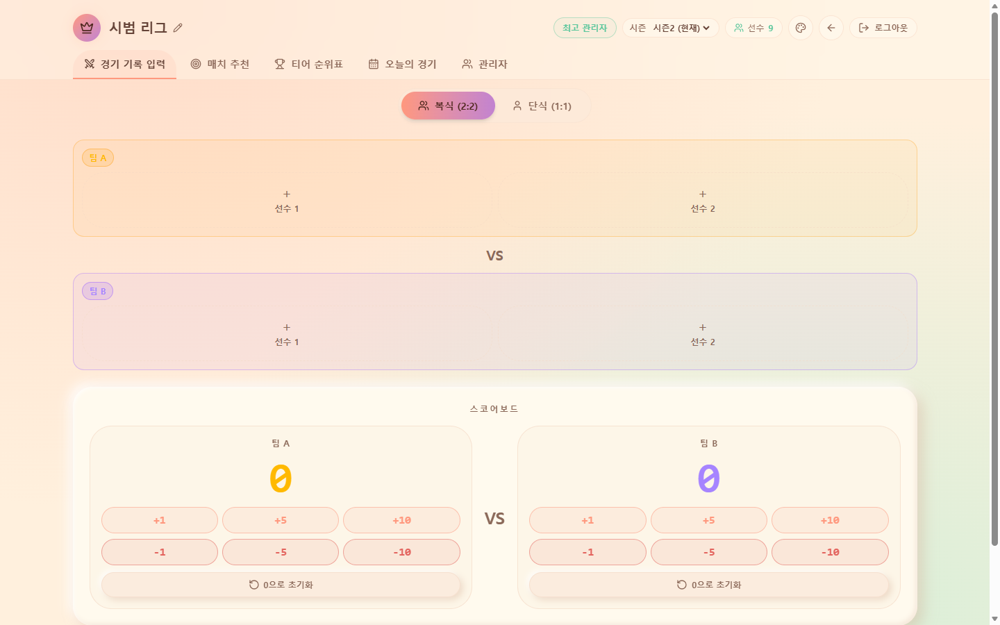
"오늘 누구랑 붙지?"는 AI한테
정모 때 대진 짜는 것도 은근 눈치 싸움이잖아요. 선수를 고르면 실력이 비슷한 파트너·상대를 AI가 추천해 줍니다. 늘 같은 사람끼리만 치던 판을 살짝 흔들어, '✨신선한 파트너'로 새 조합을 만들어 줘요. 실력차 없이 팽팽한 판이 나오니 다들 해볼 만하다고 덤빕니다. 🏸
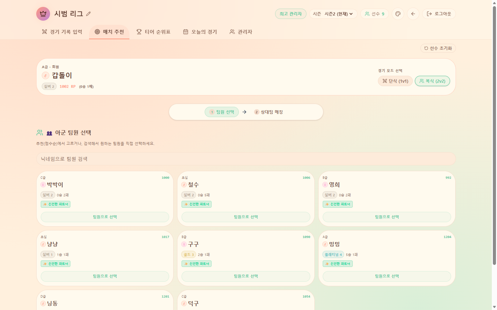
오늘 정모, 한 장으로 정리돼요
정모 하루가 끝나면 오늘의 경기가 날짜별로 요약됩니다. 그날 총 몇 경기 했는지, 몇 명이 왔는지, 단식·복식 비율은 어땠는지, 최다승은 누구였는지가 카드 한 장에 착 정리돼요. "지난 정모 몇 명 왔더라?" 하고 단톡방 뒤질 일이 없어집니다.
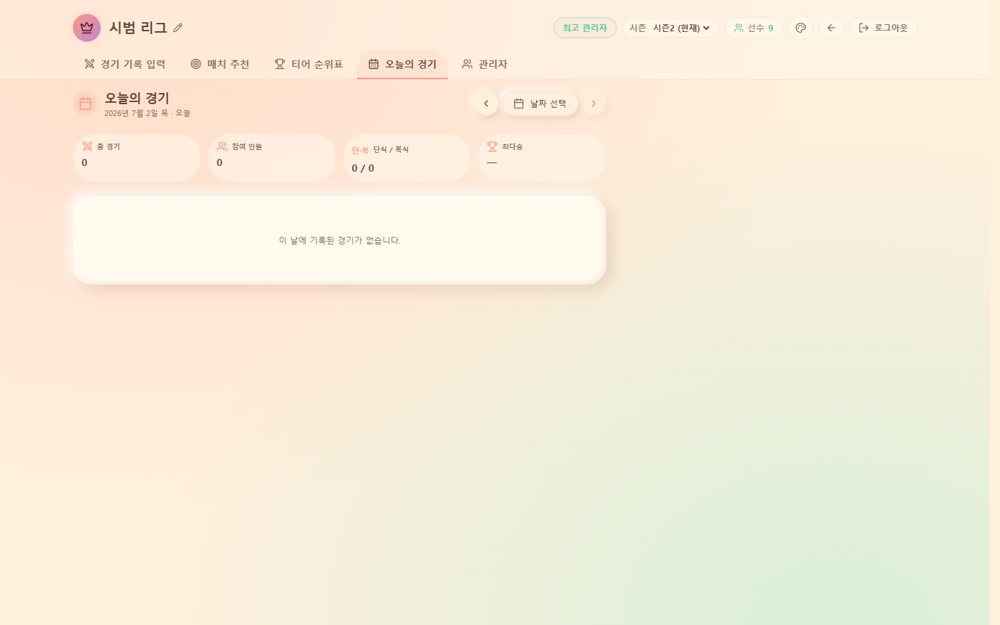
회원 관리도 인라인으로 슥
회원 명단은 닉네임·레벨·나이·성별·티어·RP를 표에서 바로바로 손보는 인라인 편집으로 관리해요. 새 회원 들어오면 명단 붙여넣기로 한 번에 등록하고, 급이 바뀌면 그 자리에서 고치면 됩니다. 총무 손 갈 일을 최대한 줄여뒀어요.
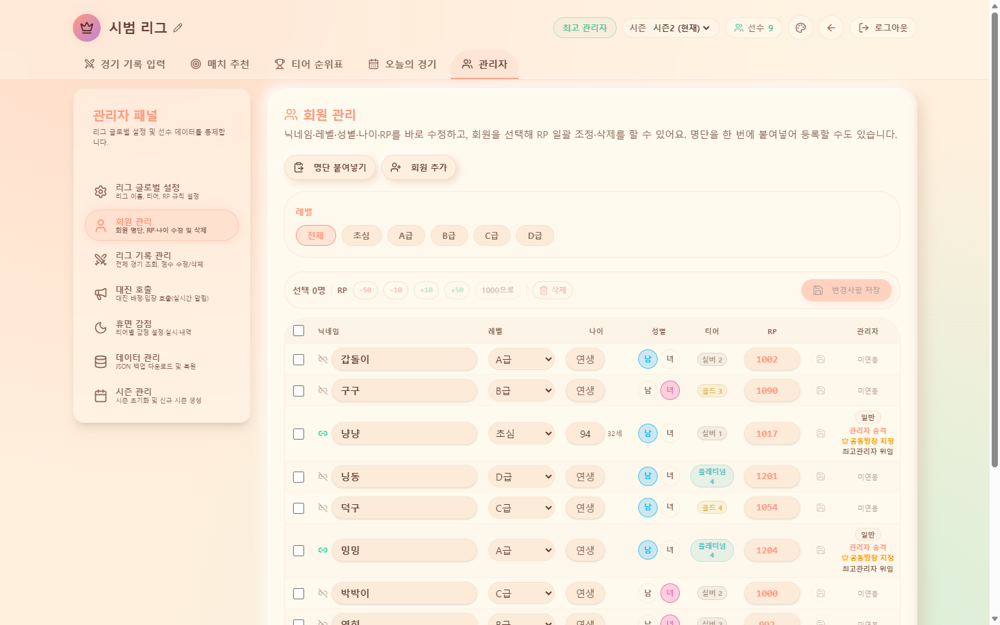
안 나오면 티어가 살살 내려가요
이건 동호회에만 넣은 기능인데요, 휴면 감점이에요. 한동안 정모에 안 나온 회원은 티어별로 RP를 조금씩 차감합니다(예: 골드·플래티넘·다이아 각 10RP). 벌주려는 게 아니라, 티어가 살살 내려가면 "어 나 강등되겠는데?" 하고 자연스럽게 복귀하게 만드는 장치예요. 감점 내역도 남아서 총무가 일일이 챙길 필요 없이 클럽이 알아서 돌아갑니다.
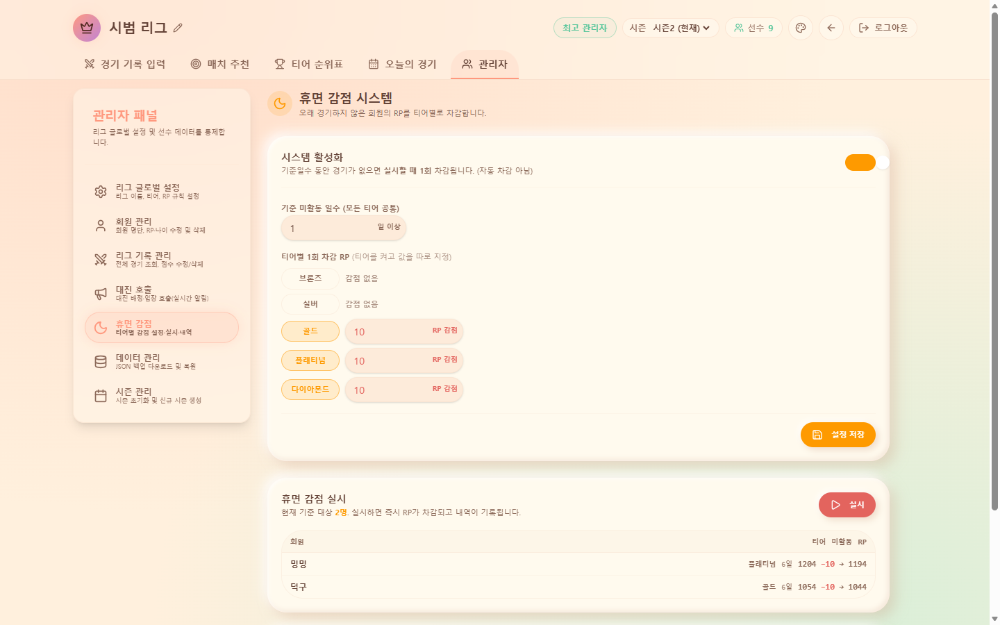
시즌 리셋도, 인수인계도 한 방에
분기나 반기마다 새 시즌을 열면 RP는 다 같이 1000점부터 다시 출발하고, 회원 명단은 그대로 유지돼요. 다들 같은 선에서 다시 뛰니까 매 시즌이 새 리그처럼 팽팽해집니다.
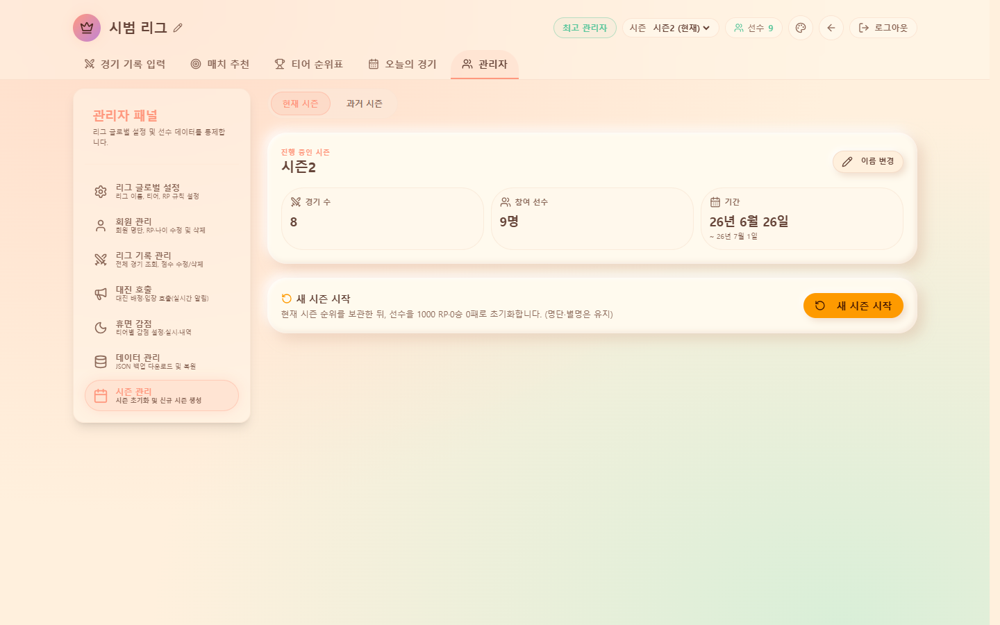
그리고 총무 하다 보면 제일 무서운 게 "다음 총무한테 어떻게 넘기지?"잖아요. 여기선 전체 리그를 JSON 파일 하나로 통째 백업해 둘 수 있어요. 총무가 바뀌어도 그 파일 하나 넘기면 리그가 그대로 이어집니다. 인수인계가 파일 하나로 끝나는 거죠. 🐈
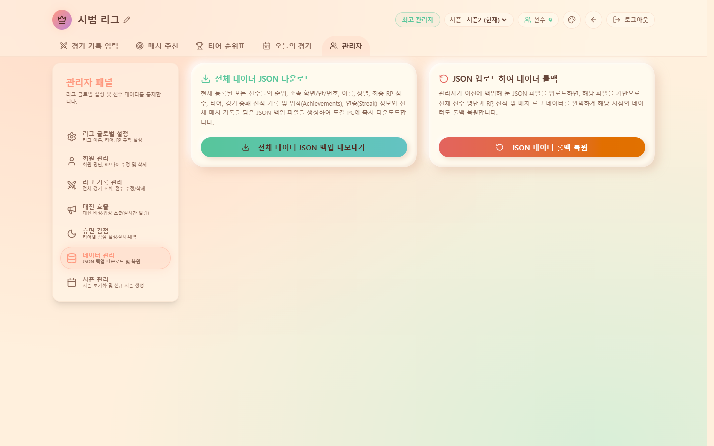
점수 규칙은 우리 클럽에 맞게
티어 기준점, 승·패 RP, 보너스, 페널티까지 전부 우리 클럽 색깔에 맞게 조정할 수 있어요. 오늘의 첫 승이나 복수전 성공 같은 보너스로 소소한 재미를 얹고, 티어별 기준점과 승/패 RP를 표에서 직접 손보면 됩니다. 빡세게 갈지 살살 갈지, 우리 정모 분위기에 맞게 재단하세요.
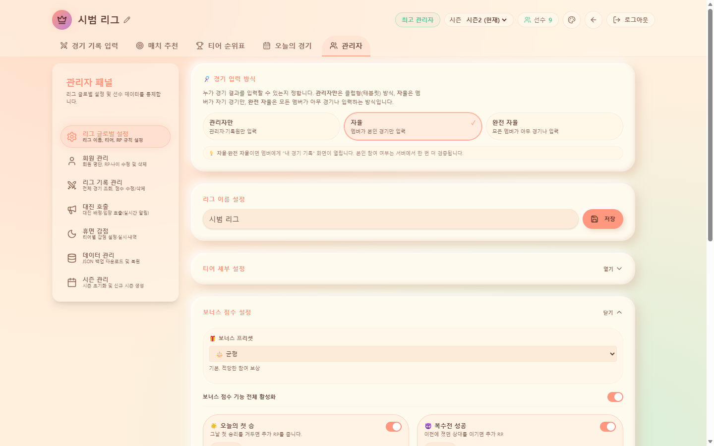
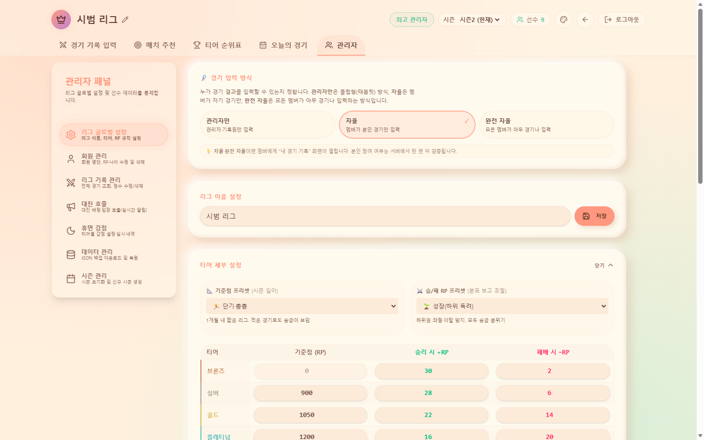
보는 재미: 화면 테마 4가지
같은 리그도 화면 톤을 바꾸면 분위기가 확 달라져요. 게임·블랙·모던·클레이 네 가지 테마를 슥 골라 쓸 수 있습니다. 우리 클럽 취향이나 그날 정모 분위기에 맞춰 골라 보세요.
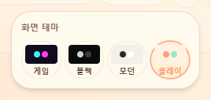
들어갈 땐 구글 로그인 한 번
진입은 구글 계정 로그인 하나면 끝, 데이터는 Supabase에 안전하게 담깁니다. 리그 안쪽은 회원 전용이라 로그인한 사람만 봐요. 우리 클럽 명단만 올리면 바로 리그가 굴러갑니다.
사실 이거, 학교에서 굴리던 리그를 담장 밖 동호회로 옮겨본 거예요. 교실 안 체육 리그가, 저녁마다 체육관에 모이는 어른들 정모로 확장된 셈이죠. 손계산은 줄이고, 여럿이 얽혀 노는 판은 그대로 살리고 싶었습니다. 🐈
써보러 가기 →리그 안쪽은 회원 전용(구글 로그인)이에요. 우리 동호회에 맞춘 세팅이 필요하면 문의로 남겨주세요.
만드는 재미로 사는 초등쌤, 박덕구 🐈